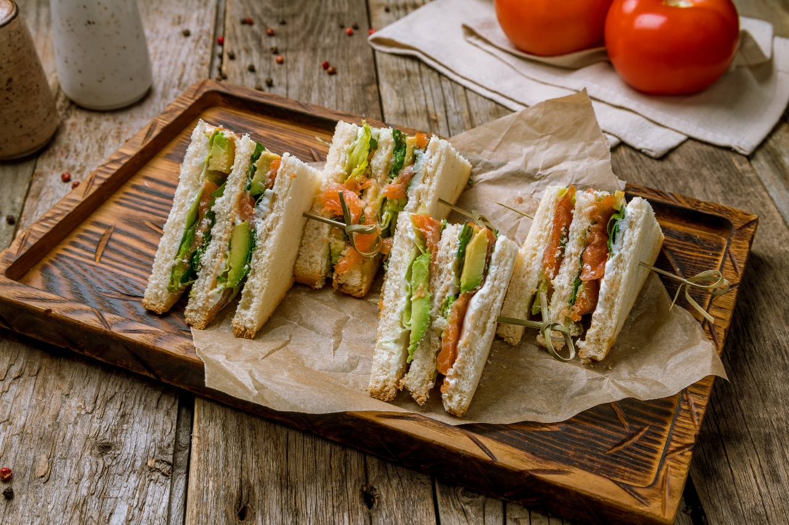

Los sándwiches más potentes del planeta
Prepárate para un festín de sabor, poder y cero confianza en Miguel.

El Leal
Con ingredientes que nunca te fallan. No como Miguel.

Triple Perdón
Tan bueno que casi perdonas a Miguel... casi.

El Anti-Traición
Nuestro homenaje a la lealtad. Entrada prohibida a Miguels.